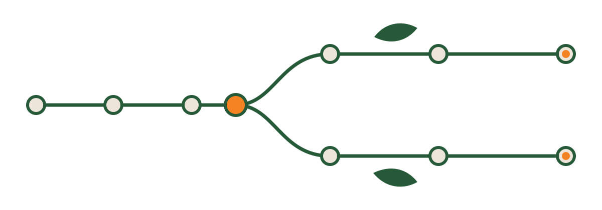
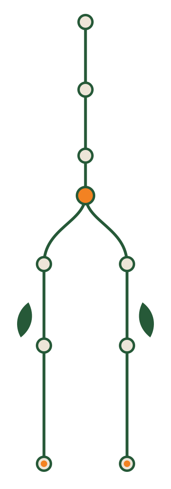

Konsumen
Pengalaman ringan dan menyenangkan untuk berburu penawaran.
Ekonomi sirkular tiga sisi
Platform ekonomi sirkular yang menghubungkan merchant F&B, konsumen, dan pengolah limbah organik dalam satu alur kaskade.
Dicegah sebelum menjadi surplus, diselamatkan lewat B2C, lalu dialihkan ke B2B bila tidak layak dikonsumsi.
Food waste menghapus nilai pangan, ekonomi, dan lingkungan sebelum sempat dipulihkan.
Sumber: UNEP Food Waste Index 2024 · KLHK 2025
Validasi fisik adalah gerbang nyata sebelum surplus masuk ke jalur yang tepat.


Lestar tidak memaksakan satu design system ke tiga aktor yang hidup di dunia berbeda.
Pengalaman ringan dan menyenangkan untuk berburu penawaran.
Kokpit data untuk keputusan operasional.
Antarmuka yang terbaca di luar ruangan dan dapat digunakan dengan satu tangan.
Buffer Intelligence memakai LSTM untuk memprediksi permintaan besok. Merchant berani memproduksi lebih banyak karena setiap surplus punya jalur keluar.
Asal setiap prediksi dicatat pada forecasts.source.
Unduh APK Lestar untuk mencoba alur demo. Ukuran berkas: 75,2 MB.
merchant@lestar.idamira@lestar.idbudi@lestar.idlestar2026Privasi: gunakan akun demo hanya untuk demonstrasi.